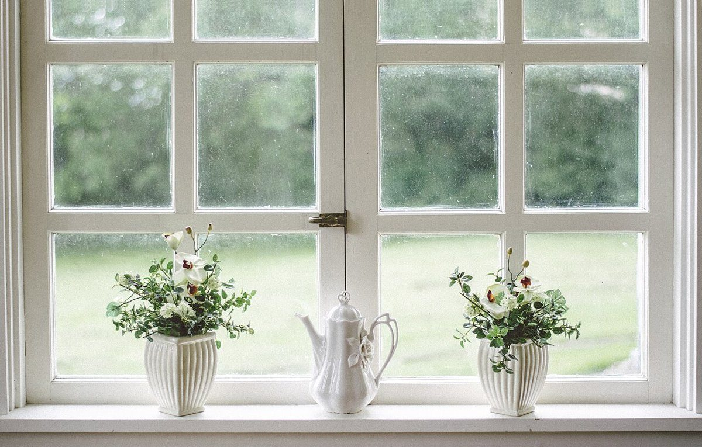

図のこと
ウェブカメラの見取り図
制作側の連想で、お店の理念・由来とは無関係です。一般的なウェブカメラを例に、部位を六つに分けて並べました。機種によって形や位置は異なります。
図1 ウェブカメラの部位の配置図(イラスト)
1
レンズ
映像を取り込む、いちばん大きな丸い部分です。
2
録画ランプ
動いているときに点く、小さな表示灯です。
3
内蔵マイク
音を拾うための、小さな穴の並びです。
4
プライバシーシャッター
レンズをふさぐための、スライド式のふたです。
5
クリップスタンド
画面のふちなどにはさんで固定する、はさみ金具です。
6
USBケーブル
パソコンにつなぎ、電気と映像をやり取りする線です。
ギャラリー(イメージ)
カップと器の写真




写真はカップやパンなどのイメージです。お店のものではありません。
お店について
確認できていること
確認できているのは所在地とInstagramのみです。そのほかは準備中です。
| 屋号 | hibitano coffee roastery |
|---|---|
| 種別 | カフェ |
| 所在地 | 〒411-0856 静岡県三島市広小路町11-10 |
| SNS | Instagram @hibi_tano |